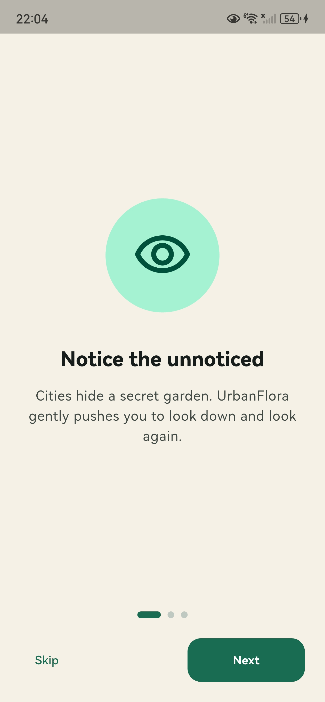
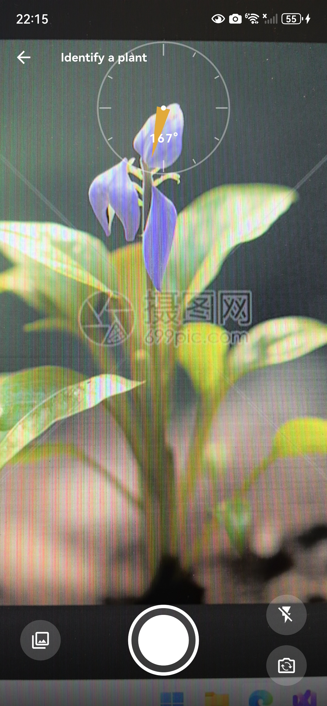
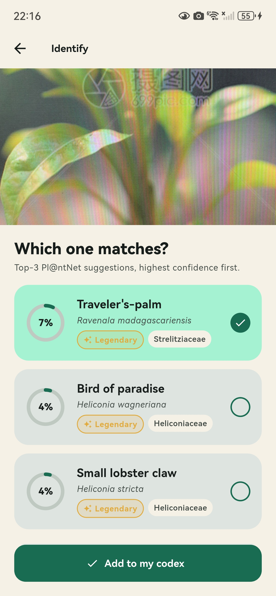
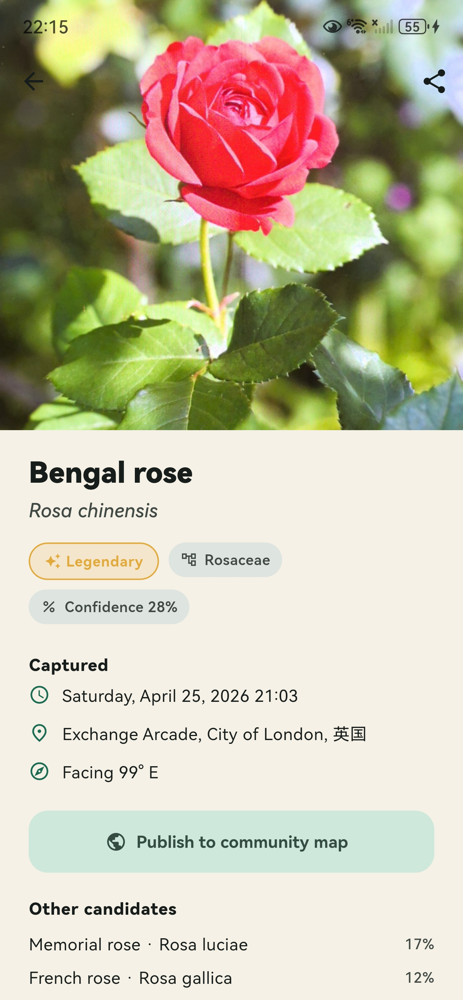
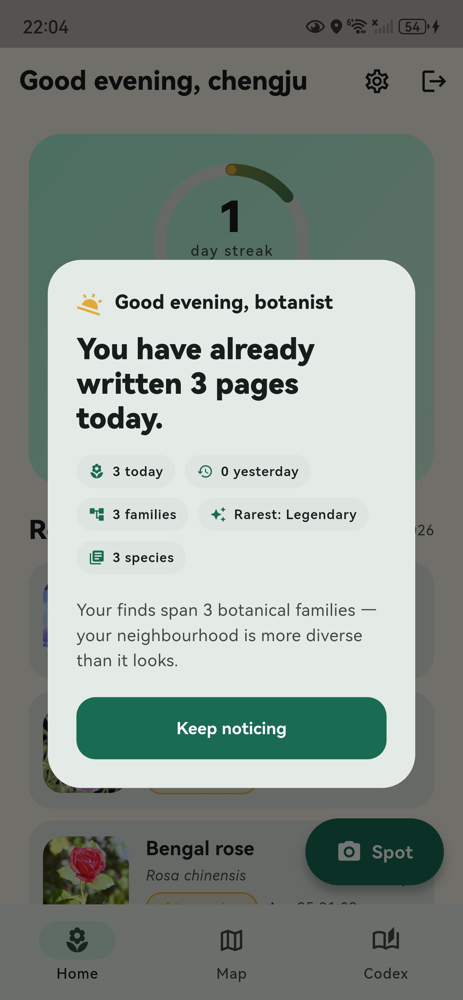
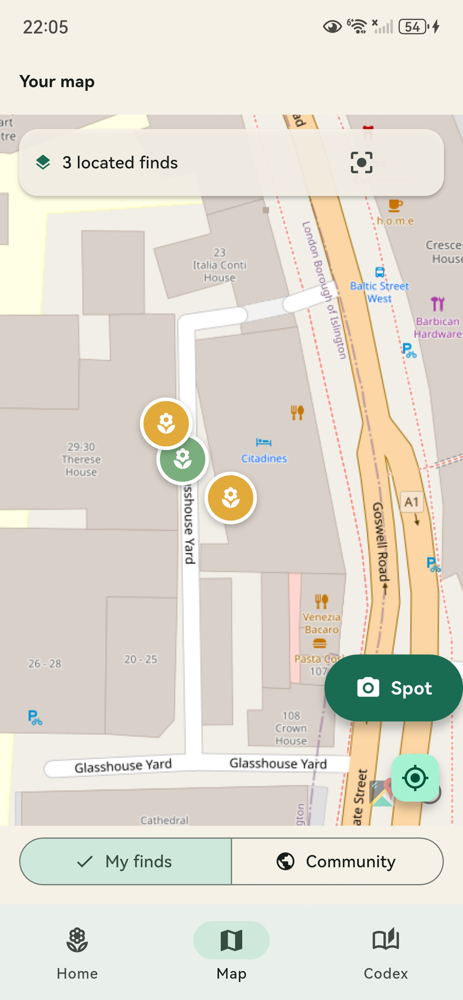
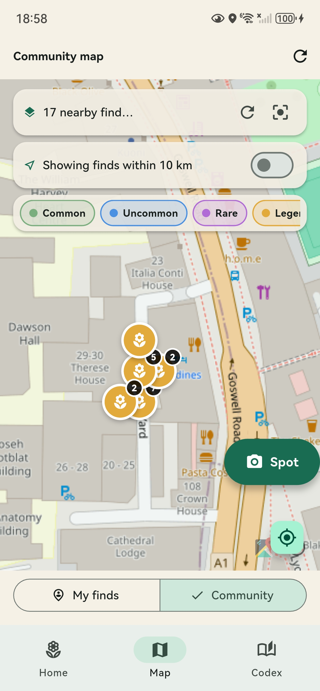
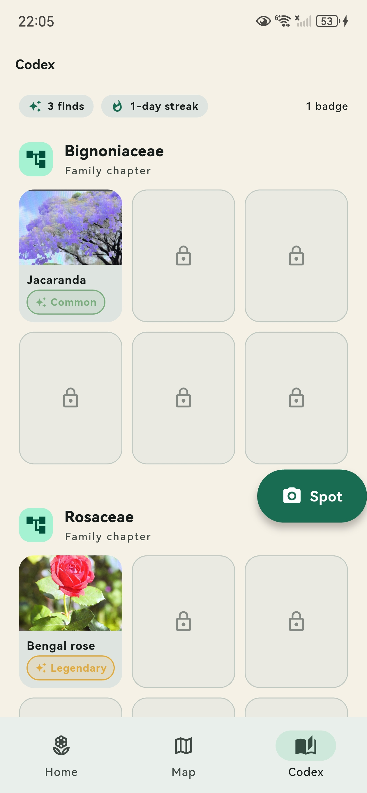
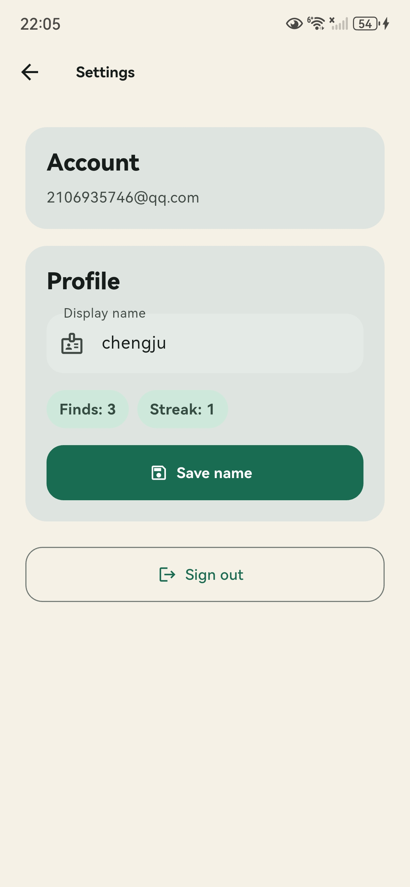
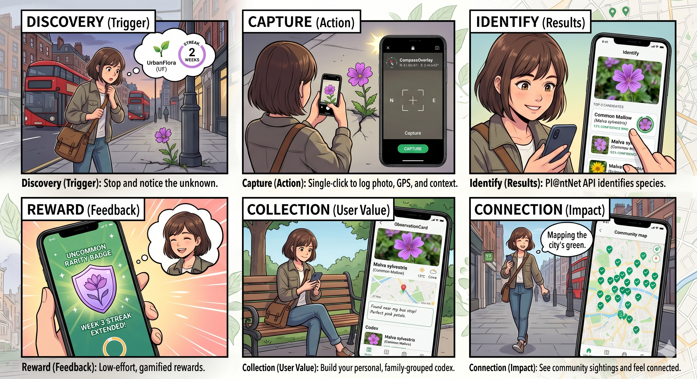

✦
Sensor-native capture
Camera, GPS, compass and current weather are woven into each observation without extra manual input.
UrbanFlora turns every walk through the city into a citizen-science biodiversity log. Snap a plant, choose from three ML candidates, and grow a personal codex enriched with GPS, compass heading and live weather context.
UrbanFlora combines mobile sensing, plant recognition and light gamification to make everyday urban biodiversity more visible.
Camera, GPS, compass and current weather are woven into each observation without extra manual input.
Pl@ntNet returns three species candidates with confidence scores, but the user still makes the final choice.
Finds are grouped by botanical family, turning repeated observations into a growing personal field guide.
A custom streak ring rewards daily noticing. It encourages return visits without making the app feel noisy.
A calm end-of-day summary shows species, families and rare finds as mini-stories rather than push spam.
Firebase Auth and Firestore keep the codex available across devices, with scope for later data export.
The core experience is designed around a simple daily loop.
Onboarding encourages users to pay attention to plants during ordinary city walks.
Pl@ntNet returns the top three likely species, supported by confidence scores.
The selected plant is saved into the user’s codex with location and environmental context.
The evening digest summarises what the user discovered and encourages another walk.
Real screens from the UrbanFlora prototype, showing the core user flow from onboarding to identification, collection and reflection.









The storyboard frames UrbanFlora as a lightweight noticing tool: a plant is seen, captured, identified and saved as part of a growing personal record.

UrbanFlora connects mobile UI, cloud storage, plant identification and environmental context services.